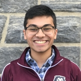
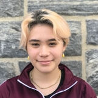
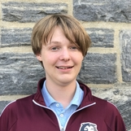

Co-Captain
Pratham is the team's Co-Captain and works with everyone on the team to ensure a safe, successful, and learning-filled season.

Pratham Gandhi Senior
Co-Captain
Carmel is the team's Co-Captain and works with everyone on the team to ensure a safe, successful, and learning-filled season.
Head of Operations
Gabby makes sure everything runs smoothly for our team during and beyond the FRC season, working closely with FIRST, the captains, and mentors.

Gabby Fischberg Junior
Head of Programming and Electronics
Spencer ensures proper coding practice, version control, and strict adherence to the style guide.

Spencer Shelton Junior
Co-Head of DBT
Kyra is a Design, Build, Test department Co-Head, and leads the department in the design and assembly of the robot.
Co-Head of DBT
Sam is a Design, Build, Test department Co-Head, and leads the department in the design and assembly of the robot.
DBT Group Lead
Rohan is a Design, Build, Test department team lead, and leads a group building a specific subassembly of the robot.
DBT Group Lead
Saif is a Design, Build, Test department team lead, and leads a group building a specific subassembly of the robot.
DBT Group Lead
Kristin is a Design, Build, Test department team lead, and leads a group building a specific subassembly of the robot.
DBT Group Lead
Owen is a Design, Build, Test department team lead, and leads a group building a specific subassembly of the robot.
Shop Foreman and Safety Captain
Jayer is our shop foreman and safety captain who watches over our workspace and safety like an angel. He rocks safety goggles better than everybody else.
Lead Mentor
Mr. Levy works with students to foster both love for and proper practice in engineering. He's master of the shop, but always ensures students are making the decisions.

Fred Levy HM Faculty
Mechanical Mentor
Mr. Cook advises the robot design and fabrication process, working closely with our student leadership to ensure success both in learning and competition.

Jon Cook Con Edison